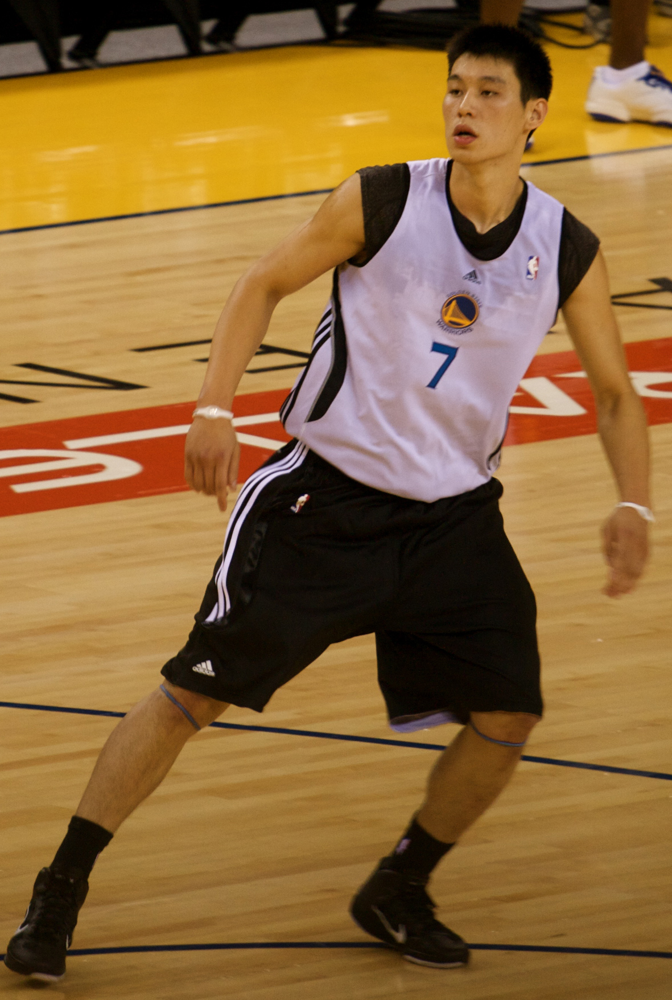
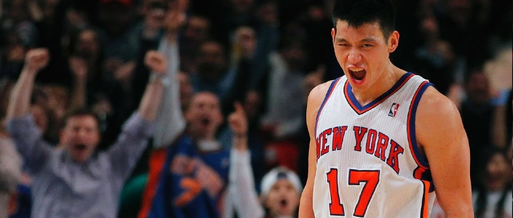
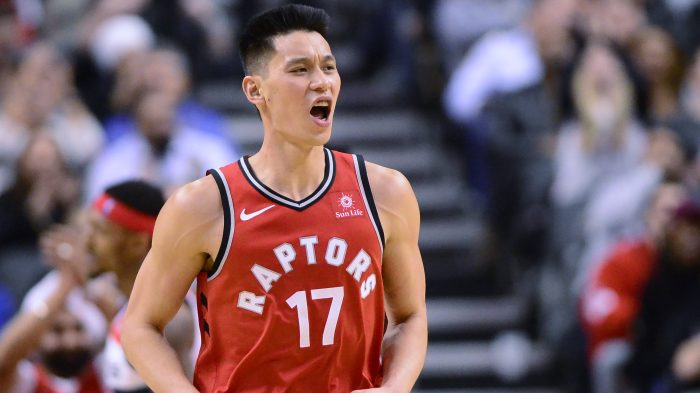

Jeremy Shu-How Lin is an American professional basketball player who plays the point guard position for the Toronto Raptors of the National Basketball Association (NBA). Lin is the first American of Chinese or Taiwanese descent to play in the NBA, and one of the few Asian Americans to play in the league ever. Playing for the New York Knicks in 2012, the relatively unknown Jeremy Lin lead his team on an astonishing 26 game run resuting in a 16-10 record. This birthed the global sensation known as Linsanity™.
Undrafted out of college, Lin reached a partially guaranteed contract deal in 2010 with his hometown team, the Golden State Warriors. He rarely played in his rookie season and was sent to the NBA Development League (D-League) three times.
He was waived by the Warriors and the Houston Rockets the following preseason before joining the New York Knicks early in the 2011–12 season. In New York, Lin continued to be played sparingly and again spent time in the D-League. In February 2012, he led a winning streak by New York and was promoted to the starting lineup.
In 2012, Lin signed a three-year contract with the Rockets, for whom he played two seasons. He was subsequently traded to the Los Angeles Lakers. He played one season with the Lakers before signing with the Charlotte Hornets. He signed with the Brooklyn Nets the following season. Limited to playing in only 37 games over two seasons due to injuries, Lin was traded to the Hawks in 2018, and then to the Raptors in 2019, who he currently plays for.
Return to the top of the page.